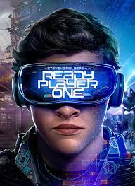

Los videojuegos son una forma de entretenimiento muy popular en la actualidad.
Ofrecen mundos imaginarios donde los jugadores pueden explorar, competir y colaborar.
Seguir leyendo
Ready Player One es una novela de ciencia ficción escrita por el autor estadounidense Ernest Cline y cuya edición original en inglés fue publicada el 16 de agosto de 2011 por la editorial Crown Publishers (una filial de Random House).1 La edición en español fue publicada por primera vez en 2011 por Ediciones B.2 También se realizó una adaptación para el cine dirigida por Steven Spielberg, la cual se estrenó mundialmente el 30 de marzo de 2018. El libro fue un superventas de The New York Times.